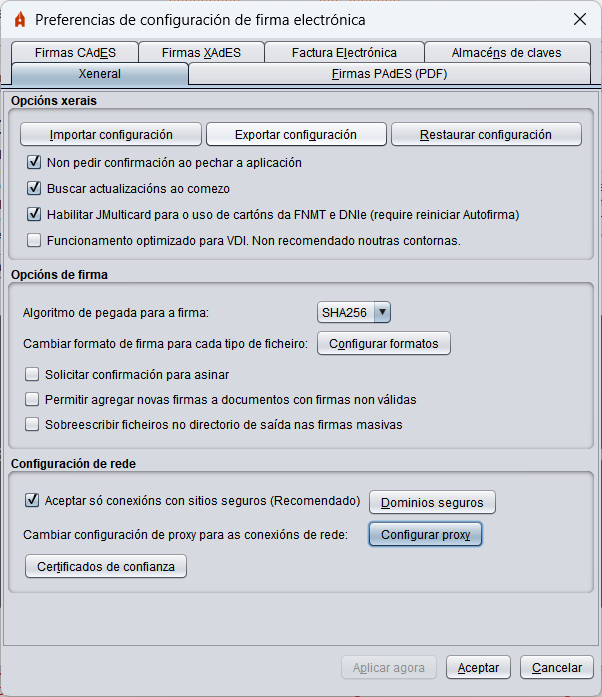
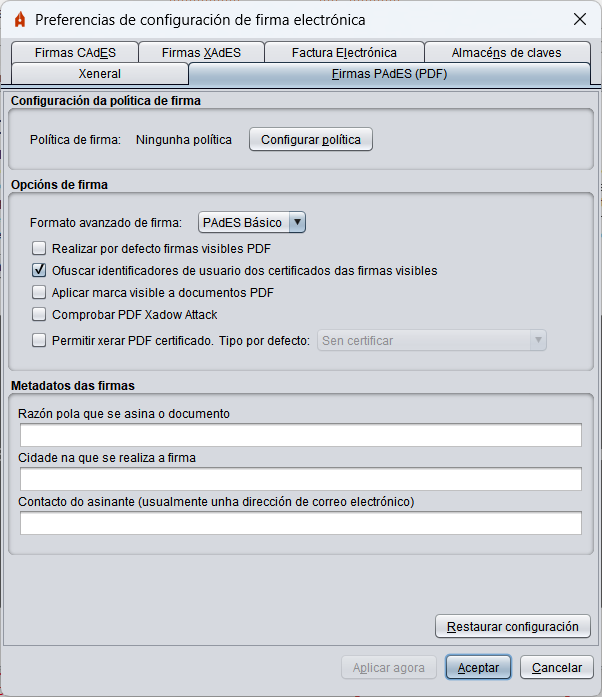
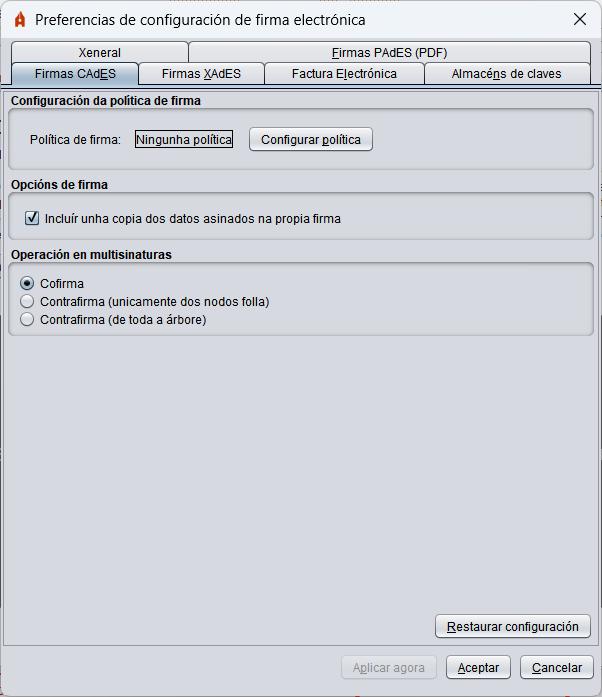
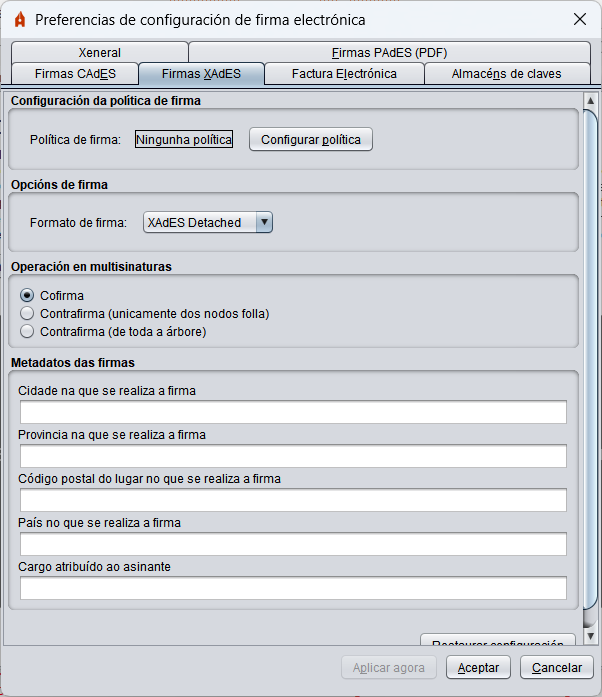
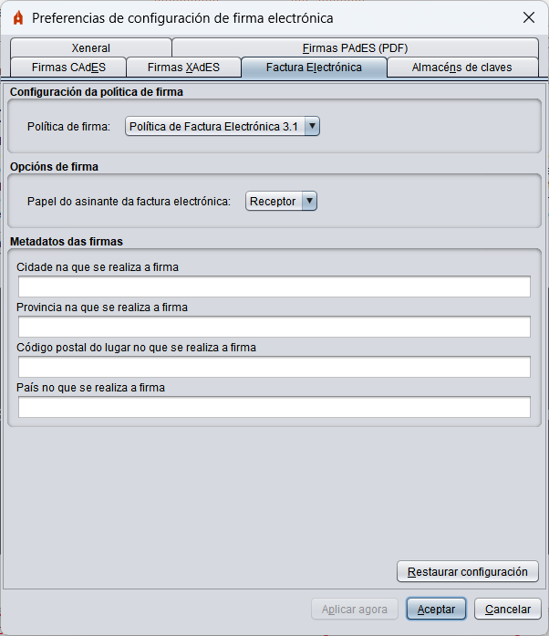
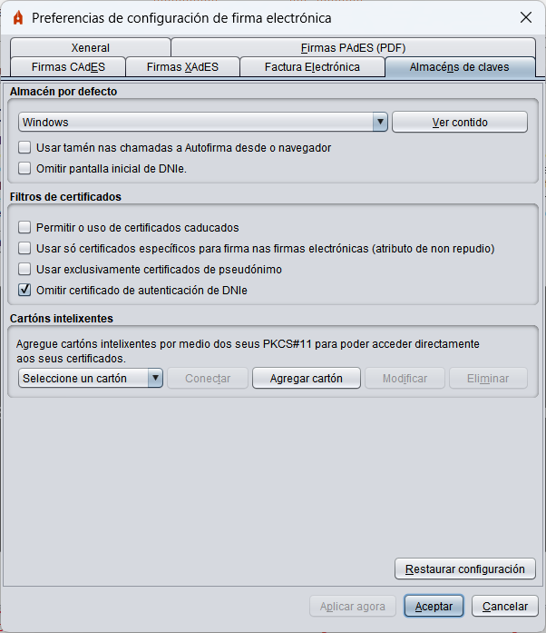

Menú Preferencias
Para configurar as firmas xeradas pola ferramenta, acceda ao menú de configuración a través da opción "Ferramentas" -> "Preferencias" na barra de menús da aplicación. Desde este menú pode configurar o comportamento xeral da aplicación e as firmas xeradas para cada tipo de formato.
Se pulsa no botón "Cancelar" desde calquera das pestanas do menú, pecharase leste ignorando calquera cambio realizado; se se pulsa o botón "Aceptar" pecharase o menú deixando configuradas as opcións definidas no menú e se se pulsa o botón "Aplicar agora", aplicaranse os cambios realizados sen pechar o menú.
Menú "Xeral"

- Opcións xerais:
- Importar configuración xeral da aplicación: Opción para importar un ficheiro da configuración proporcionado por un administrador.
- Restaurar configuración xeral da aplicación: Opción para restaurar a configuración por defecto da aplicación.
- Non pedir confirmación ao pechar a aplicación: Permite saír da aplicación sen confirmación do usuario.
- Buscar actualizacións ao comezo: Permite configurar se se deben búscar se hai actualizacións dispoñibles ao iniciar a aplicacion.
- Habilitar JMulticard para o uso dos cartóns da FNMT e DNIe: Só en Windows e Linux. Configura se debe utilizarse o controlador integrado en Autofirma para o uso dos cartóns de FNMT e DNIe. En caso de desactivarse, utilizaranse os controladores atopados no sistema. O uso desta función permite usar os cartóns compatibles cando o usuario non ten instalado o seu controlador ou existe algunha incompatibilidade con el. Esta función pode ocasionar que se solicite ao usuario múltiples veces a inserción do PIN do cartón en procesos de firma masiva. Esta configuración non terá efecto ata a próxima vez que se abra a aplicación.
- Funcionamento optimizado para VDI: Só en Windows. Configura a comunicación por WebScokets co navegador de tal modo que se evitarán bloqueos cando se utilice Autofirma nunha contorna VDI. Con todo, esta configuración retarda a comunicación cando a cantidade de datos a transmitir é grande, polo que non se recomenda noutras contornas.
- Opcións de firma:
- Algoritmo de firma: Algoritmo de firma por defecto que utiliza a aplicación para xerar as firmas electrónicas.
- Formatos de firma: Configura que formato de sinatura debe aplicarse cando se proporciona determinado tipo de documento. Ao pulsar o botón "Configurar formatos" móstrase un diálogo cos tipos de documento para os que se pode configurar un formato de firma específico:
- Documentos PDF
- Documentos OOXML de Microsoft Office
- Facturas electrónicas
- Ficheiros XML xenéricos
- Ficheiros ODF de LibreOffice ou OpenOffice
- Resto de ficheiros
Calquera destes tipos de ficheiro poden asinarse cos formatos CAdES e XAdES (acordes á configuración establecida nas pestanas correspondentes) e algúns deles poden ser asinados en formatos específicos.
O tipo de documento "Resto de ficheiros" fai referencia a calquera documento que non estea en calquera das categorías anteriores.
ADVERTENCIA: Non se recomenda que se modifique que as facturas electrónicas asínense nun formato distinto ao de factura electrónica.
- Solicitar confirmación para asinar: Cando está habilitada esta opción solicítase confirmación ao usuario antes de asinar.
- Permitir agregar novas firmas a documentos con firmas non válidas: Ao habilitar esta opción, Autofirma non impedirá agregar novas firmas (cofirma ou contrafirma) a documentos nos que se atope que xa hai firmas e estas non sexan válidas (estean corruptas ou con certificados caducados).
- Sobreescribir ficheiros no directorio de saída: Opción para configurar se se desexa que, ao xerar a estrutura de directorios de firmas resultante dun proceso de firma masiva, e en caso de atopar un ficheiro co mesmo nome co que se vai a gardar unha firma, se sobreescriba o ficheiro preexistente polo novo ficheiro de firma ou se garde a firma utilizando un novo nome.
- Configuración de rede:
- Aceptar só conexións con sitios seguros (Recomendado): Se esta opción está activada comprobarase a confianza do certificado SSL dos sitios web aos que deba conectarse a aplicación. Se se traballa en sitios web cun certificado SSL non recoñecido, é probable que deba deshabilitar esta opción.
- Dominios seguros: Opción para configurar unha lista de dominios que Autofirma tratará como seguros ao conectar a traves de SSL. Para saber máis, consulte a páxina Configuración de lista branca de dominios.
- Configurar proxy: Opción para configurar o proxy para todas as conexións de rede de Autofirma. Para saber máis, consulte a páxina Configuración do proxy de rede.
- Certificados de confianza: Opción para configurar certificados de confianza en conexións de rede. Para saber máis, consulte a páxina Certificados de confianza.
Menú "Firmas PAdES (PDF)"

Menú "Firmas CAdES (binarias)"

Menú "Firmas XAdES (XML)"

- Configuración da política de firma: Permite declarar a política de firma que se segue nas firmas XAdES:
Os valores accesibles a través do panel de configuración son:
- Ningunha política: As firmas de XML xeradas non declararán política de firma.
- Política de sinatura da AGE 1.9: Declárase a política de sinatura da AGE v1.9
- Política a medida: Permite configurar manualmente cada unha das propiedades da política.
- Identificador da política.
- Pegada dixital do identificador da política.
- Algoritmo de pegada dixital do identificador da política.
- Calificador da política
- Opcións de firma:
- Formato das firmas:
- XAdES Enveloping: Configúrase o modo enveloping (a firma envolve aos datos asinados).
- XAdES Detached: Configúrase o modo detached (firma e datos nunha super-estrutura XML).
- XAdES Enveloped: Configúrase o modo enveloped (a firma insérese dentro dos datos XML).
ADVERTENCIA: A política de sinatura da AGE, só permite a realización de firmas en formatos Enveloped e Internally Detached (aquí referida como Detached). Así pois, só se poderán configurar estes formatos de firma cando se declare a política de sinatura da AGE.
- Metadatos das firmas XAdES:
- Cidade na que se realiza a firma: Cidade na que se localiza o asinante no momento da firma.
- Provincia na que se realiza a firma: Provincia na que se localiza o asinante no momento da firma.
- Código postal na que se realiza a firma: Código postal na que se localiza o asinante no momento da firma.
- País no que se realiza a firma: País a que se localiza o asinante no momento da firma.
- Cargo do asinante: Cargo de quen realiza a firma.
Menú "Factura Electrónica"

- Configuración da política de firma: Permite declarar a versión da política de sinatura de Factura electrónica que debe utilizarse.
- Opcións de firma:
- Papel do asinante da factura electrónica: Permite configurar o rol que desempeña o asinante no ciclo de vida da factura.
- Metadatos das facturas electrónicas:
- Cidade na que se realiza a firma: Cidade na que se localiza o asinante no momento da firma.
- Provincia na que se realiza a firma: Provincia na que se localiza o asinante no momento da firma.
- Código postal na que se realiza a firma: Código postal na que se localiza o asinante no momento da firma.
- País no que se realiza a firma: País a que se localiza o asinante no momento da firma.
Menú "Almacéns de claves"

- Almacén por defecto:
- Permite seleccionar o almacén de claves que se cargará por defecto na interface de escritorio.
- Ver contido: Permite ver os certificados que contén o almacén seleccionado.
- Usar tamén nas chamadas de Autofirma desde o navegador: Indica se se desexa que o almacén configurado sexa o que se cargue por defecto tamén cando se chame a Autofirma desde o navegador.
- Filtros de certificados:
- Non mostrar a pantalla inicial de DNIe e traballar sempre co almacén por defecto: Omite a pantalla inicial ao detectar un DNIe e utilizarase o almacén por defecto que estea configurado.
- Permitir o uso de certificados caducados: Ao estar habilitada esta opción, os certificados caducados aparecerán no diálogo de selección de certificados de firma, o que permitirá asinar con eles.
- Usar só certificados específicos para firma nas firmas electrónicas (atributo de non repudio): Se está marcada esta opción, só se mostrarán os certificados que declaren especificamente ser de firma.
- Usar exclusivamente certificados de pseudónimo cando están dispoñibles: Restrinxe que unicamente se poidan usar certificados de pseudónimo cando estes estean dispoñibles.
- Omitir certificado de autenticación de DNIe: Oculta o certificado de autenticación incluído nos almacéns de claves para DNIe.
- Cartóns intelixentes:
- Permite dar de alta cartóns intelixentes a partir do seu controlador PKCS#11 para poder usalas directamente como un almacén de claves accesible desde o diálogo de seleccín de certificados. Os cartóns intelixentes agregadas aquí, poderanse configurar como almacéns por defecto no desplegable do primeiro apartado.
- Conectar: Realiza unha proba de conexión co almacén de claves do cartón intelixente seleccionada.
- Agregar cartón: Engade un novo cartón intelixente. Abrirase un diálogo onde introducir un nome para o cartón intelixente e a ruta onde se atopa o seu controlador PKCS#11.
- Modificar: Permite modificar o nome e a ruta do controlador do cartón intelixente seleccionada.
- Eliminar: Elimina o cartón intelixente seleccionada no desplegable.